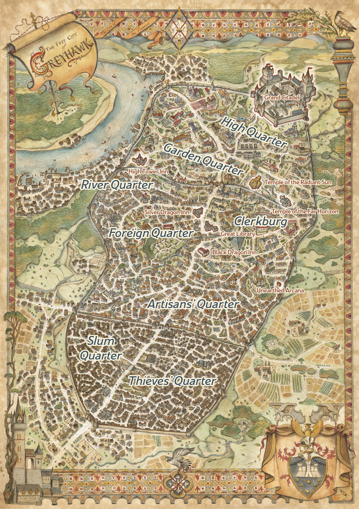

|

|
- Black Dragon Inn
- - Key People: Miklos Dare (Proprietor)
- - Reasons to visit: Eavesdropper's Paradise, Information Source, Place to Stay
- Grand Citadel
- - Key People: Sental Nurev (Captain-General of the City Watch), Derider Fanshen (Constable and Priest of Pelor)
- - Reasons to visit: Appointment, Break-In or Breakout, Imprisonment
- Great Library
- - Key People: Abra Saghast (Head Librarian)
- - Reasons to visit: Research, Spellbooks, Spell Scrolls
- High Tower Inn
- - Key People: Erlynn Goodfellow (Proprietor)
- - Reasons to visit: Information Source, Place to Stay, Spellcaster
- Silver Dragon Inn
- - Key People: Olaf Al-Azul (Proprietor), Sivan Al-Azul (Proprietor)
- - Reasons to visit: Meeting with Foreign Dignitaries, Place to Stay, Security
- Temple of the Far Horizon
- - Key People: None
- - Reasons to visit: Adventurers Wanted, Healing, Safe Travels, Teleportation Circle
- Temple of the Radiant Sun
- - Key People: Sarana (Archpriest)
- - Reasons to visit: Healing, Raise Dead, Service to the Greater Good
- Unearthed Arcana
- - Key People: Morley (Proprietor)
- - Reasons to visit: Buying and Selling Magic Items, Free Loan, Magic Item Identification
|